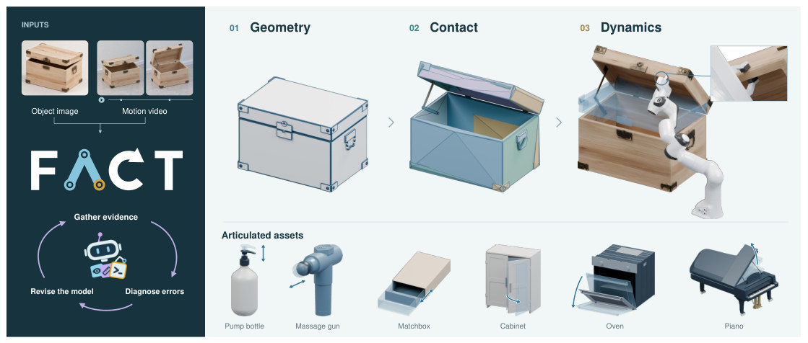
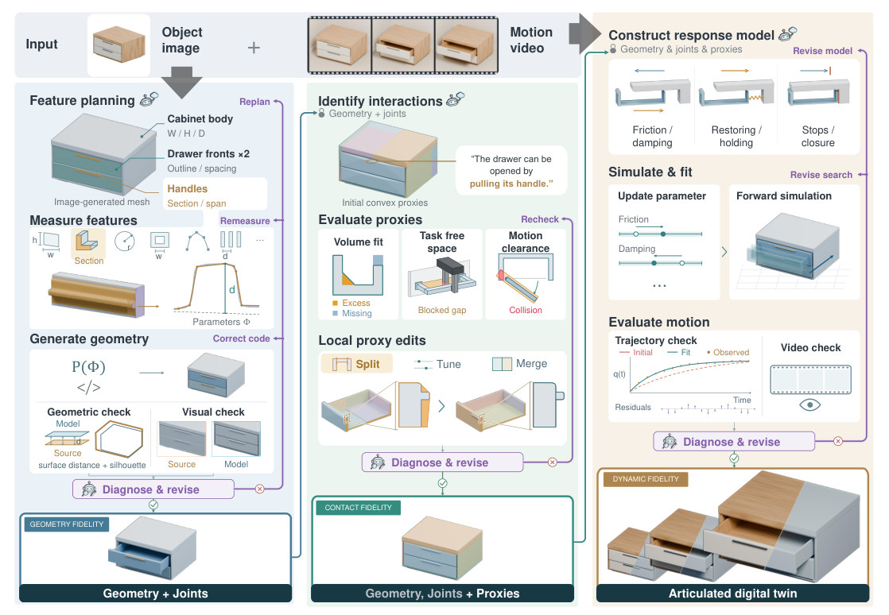
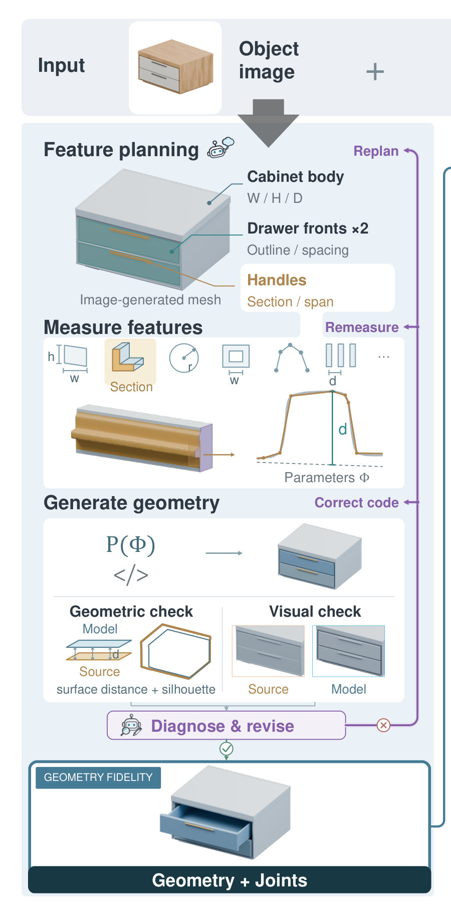
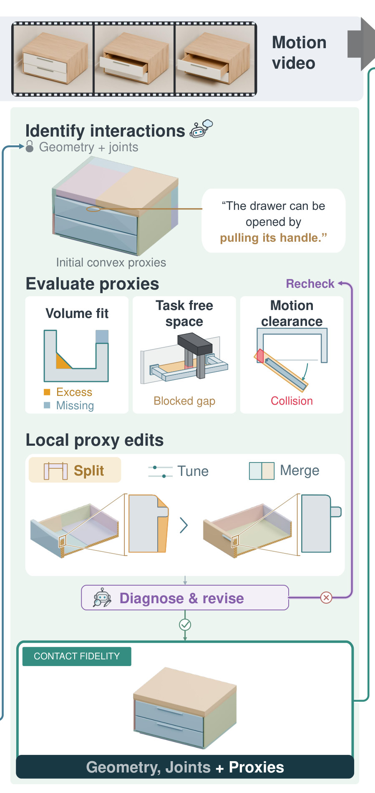
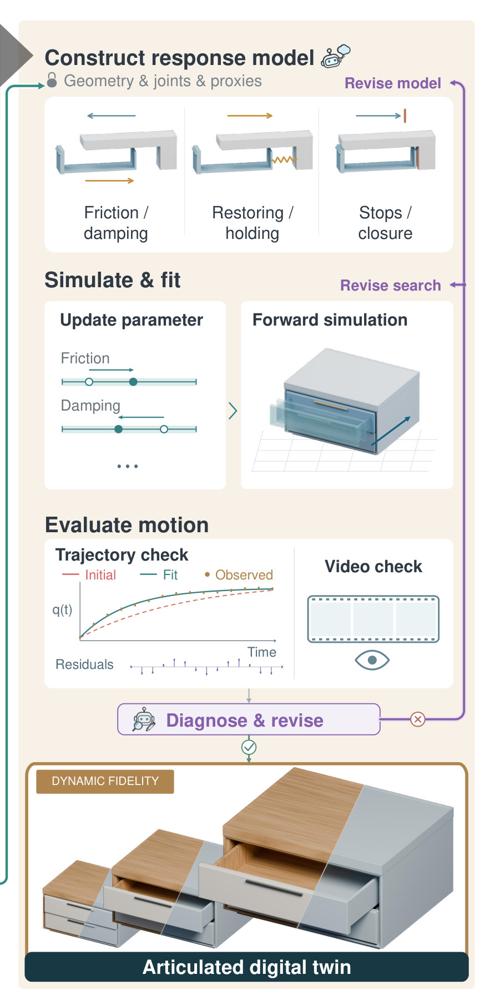
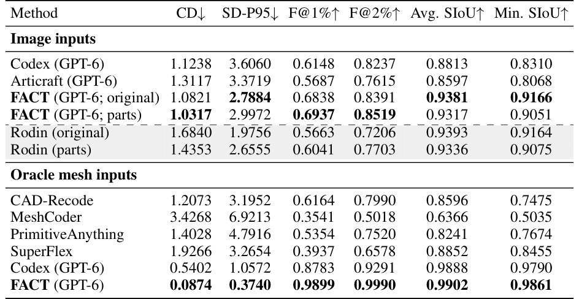
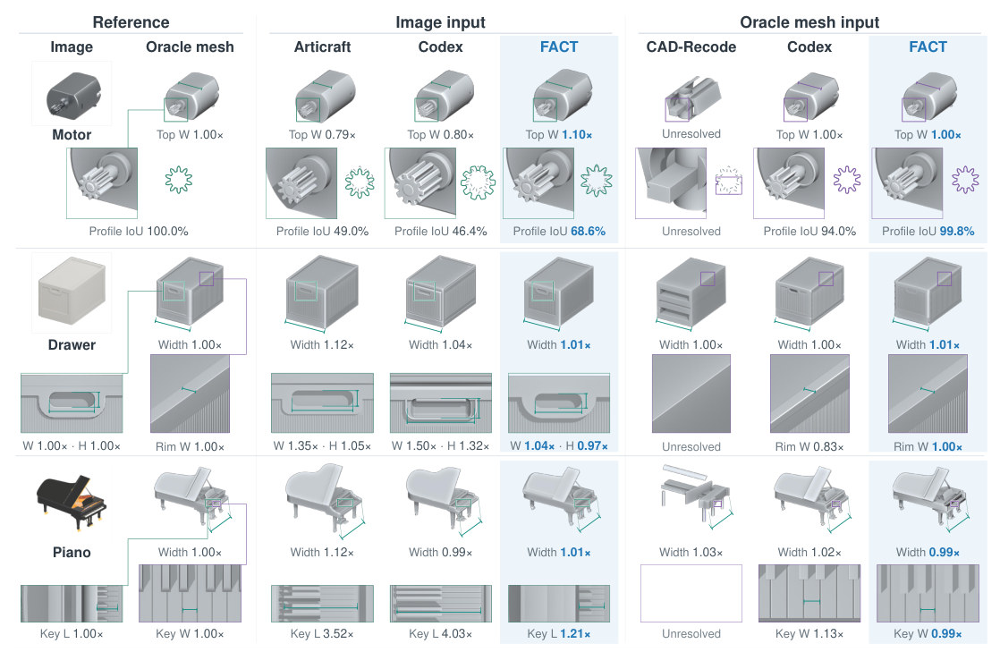
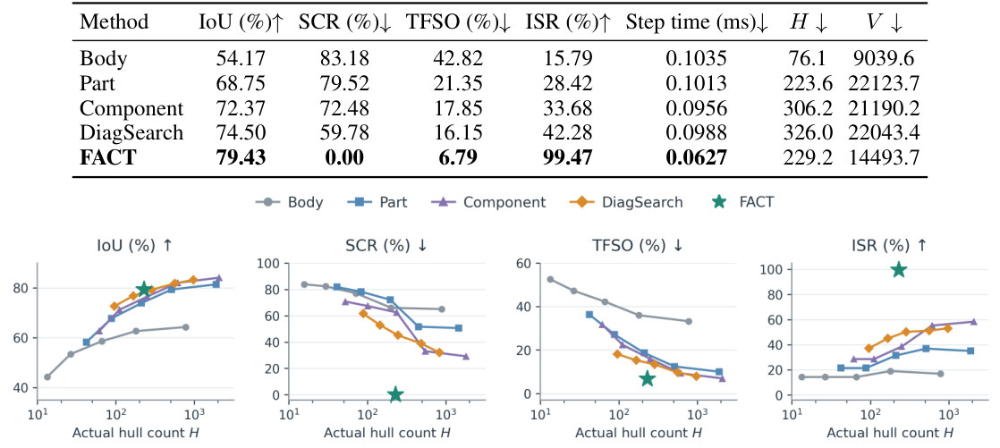
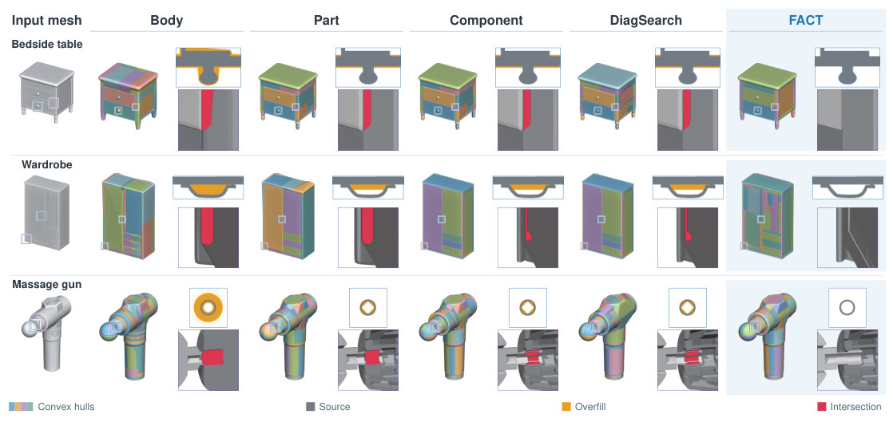
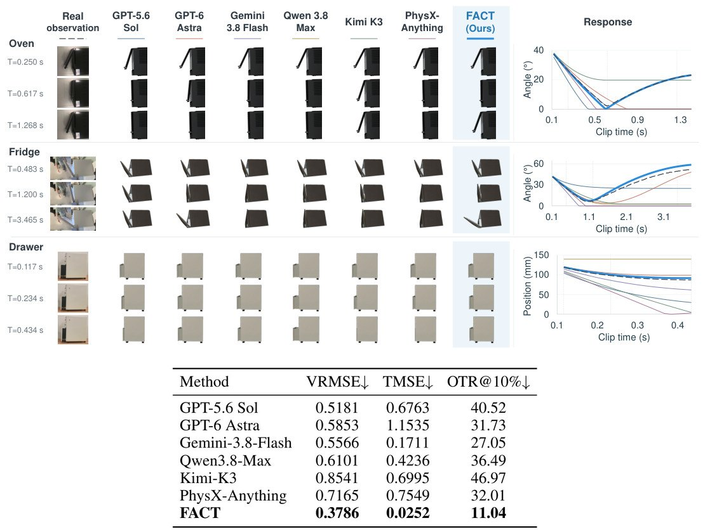

Agent-centric-real-to-sim · 归档于 2026-11-16
FACT (Articulated Twins)
FACT: Fidelity-Aware Construction of Articulated Twins
归档到 Agent-centric real-to-sim：agent 把一张物体图片和几段运动视频变成仿真里的 articulated twin，逐层修几何、碰撞代理和动力学参数，再用参考几何、夹爪交互和真机 held-out 视频验证。
TL;DR
- Problem
- 看着像的铰接资产进了仿真照样出错：尺寸偏，凸包碰撞代理堵住把手、挡住抽屉，质量阻尼靠 LLM 先验猜，运动对不上真机。
- Idea
- 一个 agent 在共享的可编辑表示 A = (G 几何, K 关节, C 碰撞代理, θ 物理参数) 上循环 evidence → diagnosis → revision：agent 选测量和修改，数值工具执行并回报误差；按 geometry → contact → dynamics 逐层做，做完一层就锁定。
- Result
- Oracle mesh 上 CD 0.0874 vs Codex 0.5402（Tab. 1）；夹爪交互成功率 ISR 99.47% vs DiagSearch 42.28%，凸包少 29.7%（Tab. 3）；6 个真机物体的 held-out 轨迹 TMSE 0.0252 vs 直接推断最好的 0.1711（Tab. 4）。
Problem
看着对的抽屉柜，进了仿真却抓不住把手、推不回抽屉、滑动也不像真机
Running example · 后面每个 stage 都跟着它走
抽屉柜（Fig. 2 的双抽屉柜）：输入 1 张物体图片 + 抽屉被推一下后自己滑动的视频 → 想要：尺寸对、夹爪能抓住把手拉开、抽屉推得回去、滑动轨迹和真机一致的 articulated twin。
论文没有把同一个抽屉的数字从头跟到尾：Fig. 2 用同一个双抽屉柜画完三层，每层的实测数字来自论文里对应的抽屉实例（几何：Fig. 3 的 Drawer 与 baking chamber 的抽屉把手；接触：Fig. 5 与项目页的床头柜；动力学：真机 Drawer），下面逐处注明。
flowchart LR IN["抽屉柜
1 张图 + 滑动视频"]:::example IN --> A1["Articraft / Codex
看图直接写零件代码"] A1 --> AX["把手尺寸走样
把手宽 1.35× / 1.50×"]:::gap IN --> B1["CoACD 默认分解
Body / Part / Component"] B1 --> BX["凸包填把手、挡抽屉
ISR 15.79–33.68%"]:::gap IN --> C1["DiagSearch
按诊断只调阈值"] C1 --> CX["代理仍互相穿插
SCR 59.78% · ISR 42.28%"]:::gap IN --> D1["LLM 直接推参数
5 个 LLM + PhysX-Anything"] D1 --> DX["抽屉滑过头或不动
TMSE 0.1711–1.1535"]:::gap
数字出处：几何一栏是 Fig. 3 Drawer 行的把手宽度（image input，Articraft / Codex，参考 = 1.00×）；两栏 contact 是 19 个物体的平均（Tab. 3），“填把手、挡抽屉”的现象见 Fig. 5 和项目页视频；dynamics 一栏是 6 个真机物体平均的 TMSE（Tab. 4，抽屉没有单列数字），“滑过头或不动”是读 Fig. 6 抽屉曲线和项目页视频得出的推断。
根本问题：三层误差各有出处（尺寸 ↔ 特征参数，碰撞失败 ↔ 凸分解的分区，轨迹残差 ↔ 响应模型和参数），baseline 一次生成或只调全局阈值、全局参数，没有把误差追到该改的那一块。 这篇的切入点：agent 读量化证据，把误差对到可编辑的特征、分区和模型项再改，数值工具负责计算和验证；三层按顺序做，前一层锁定后当后一层的基础。
Related work
| 相关工作 | 解决什么 | 怎么解决 | 和本文的区别 |
|---|---|---|---|
| 同一问题 · 别的解法 | |||
| Agentic / code 生成铰接资产（本文所属） Articraft、Codex、Articulate-Anything、Real2Code | 图片 → 带零件和关节的资产 | LLM 写零件 + 关节程序，再迭代修改 | 尺寸凭看图估，质量阻尼用 LM 先验 → FACT 先规划特征再逐个测量，并补 contact、dynamics 两层（image input CD 1.0317 vs Articraft 1.3117） |
| 凸分解碰撞代理 CoACD（EmbodiedGen V2 所用）、V-HACD、RL-ACD、VisACD；论文自建的 DiagSearch | 把 mesh 变成凸包碰撞代理 | 按凹度误差切分或学习切割；有的按应用保留可导航空间；DiagSearch 按诊断调阈值 | CoACD 只看几何误差，DiagSearch 有诊断却只能调阈值、不改分区 → FACT 按任务诊断局部重分区，再在保真约束下压缩（ISR 99.47% vs 42.28%） |
| 直接推断物理参数 GPT-6 Astra、Gemini-3.8-Flash 等 LLM/VLM；PhysX-Anything | 给资产配质量、阻尼等参数 | 看视频、帧或单张图，一次给出参数 | 一次猜完，不和观测轨迹对残差 → FACT 拟合视频轨迹、按残差改模型（TMSE 0.0252 vs 最好 0.1711） |
| 物理 twin 与系统辨识 gradSim、PAC-NeRF、PhysTwin、RigPI、Scalable Real2Sim | 从观测反推物理参数 | 可微仿真 + 渲染；或用机器人力矩、本体感知 | 要可微仿真或机器人传感，响应模型不由 agent 搭建和修改 → FACT 只用被动视频，agent 搭模型、定拟合范围 |
| 相似做法 · 别的问题 | |||
| Shape program / CAD 逆向 CAD-Recode、MeshCoder、PrimitiveAnything、SuperFlex；CADReasoner、IterCAD | 点云 / mesh / 图 → 可执行形状程序或基元组合 | 学习的 shape-to-code、基元拟合；agentic 版用视觉或几何反馈迭代 | 没有特征计划指导测量，反馈不分“改表示”还是“改参数”，也不建关节 → FACT 按零件定特征、逐参数测量，诊断决定 replan 还是 remeasure（oracle CD 0.0874 vs CAD-Recode 1.2073） |
来源：论文 §2 Related Work、§1 Introduction 和 §4 的 baseline 设置；未另行检索。library 里已有 PhysTwin 的页面，论文只在 related work 里引用它，没有对比数字。
Level 1 · Big picture
一个 agent 在共享的可编辑模型上循环，按 geometry → contact → dynamics 逐层修、逐层锁定

怎么读这张图
- 左上 INPUTS：Object image + Motion video（这里是木箱开盖）。例子里就是抽屉柜图片 + 抽屉滑动视频。
- 左下循环 Gather evidence → Diagnose errors → Revise the model：每一层都跑这个循环，见 循环细节。
- 01 Geometry：白色模型 = 由零件特征生成的可编辑几何 + 关节。例子：柜体、两块抽屉前板、把手。
- 02 Contact：彩色块 = 凸包碰撞代理（collision proxies），开盖要用的空间不能被填住。例子：把手开口、抽屉行程。
- 03 Dynamics：机械臂掀盖，右上放大的是被动支撑杆（passive stays）；开合的快慢、停在哪要和真机一致。例子：抽屉被推后滑多远、多快停。
- 底部 Articulated assets：pump bottle、massage gun、matchbox、cabinet、oven、piano，用同一流程构建的其他物体。
符号
| 符号 | 白话 | 例子里的值 |
|---|---|---|
| A = (G, K, C, θ) | 整个 articulated twin，四部分共用零件编号和刚体坐标系 | 一台抽屉柜的完整仿真模型 |
| G | 零件几何（part geometry），由可编辑特征生成的零件 mesh | 柜体、2 块抽屉前板、2 个把手 |
| K | 运动学图（kinematic graph）：哪些零件合成刚体，每个关节的父子刚体、类型、轴、原点、行程 | 每个抽屉一个滑动（prismatic）关节；真机 Drawer 有 4 个 kinematic bodies（Tab. 6） |
| C | 碰撞代理（collision proxies）：每个刚体是若干凸包（convex hull）的并 | 柜体一组凸包、每个抽屉一组 |
| θ | 物理参数：阻尼、摩擦、回复 / 保持项等 | 真机 Drawer：β = 4.04196 s⁻¹，α = 0.375197 m/s²（Tab. 10） |
flowchart LR I["Input
1 张图 + 滑动视频"]:::example --> M["Agent 循环 · 逐层锁定
geometry → contact → dynamics
把手 → 凸包 → β, α"]:::win M --> O["Articulated twin
A = (G, K, C, θ)"]
Level 2 · Stages
3 个 stage，外加贯穿全程的 evidence → diagnosis → revision 循环

符号
| 符号 | 白话 | 例子里的值 |
|---|---|---|
| P(Φ)、</> | 生成几何的可执行程序，Φ 是它的几何参数（正文写作 P(ϕ)） | 生成柜体、抽屉前板和把手的代码 |
| d | 图里两处：截面图里是测出的截面深度；Geometric check 里是模型和源 mesh 表面之间的距离 | baking chamber 抽屉把手深度 d ≈ 0.06631（App. B.4） |
| q(t) | 关节坐标随时间的轨迹 | 抽屉拉出的距离（Fig. 6 的 Position，mm） |
怎么读这张图
- 顶部 Input：Object image（双抽屉柜）进左列；Motion video（抽屉拉出的三帧）直接进右列。
- 左列 GEOMETRY FIDELITY：Feature planning（Cabinet body W/H/D、Drawer fronts ×2 outline/spacing、Handles section/span）→ Measure features（截面 → 参数 Φ）→ Generate geometry（P(Φ) 生成模型）→ Geometric check（表面距离 + silhouette）和 Visual check（Source 对 Model）→ Diagnose & revise。紫色回边 Replan / Remeasure / Correct code 指明回到哪一步；✓ 后输出 Geometry + Joints。
- 中列 CONTACT FIDELITY：锁头 + “Geometry + joints” = 上一层锁定不再改。Identify interactions（“The drawer can be opened by pulling its handle.”）→ Evaluate proxies：Volume fit（Excess / Missing）、Task free space（Blocked gap）、Motion clearance（Collision）→ Local proxy edits：Split / Tune / Merge → Diagnose & revise（Recheck）→ Geometry, Joints + Proxies。
- 右列 DYNAMIC FIDELITY：锁头 “Geometry & joints & proxies”。Construct response model 三类项：Friction / damping、Restoring / holding、Stops / closure → Simulate & fit（Update parameter 调 Friction、Damping；Forward simulation）→ Evaluate motion（Trajectory check：Initial、Fit、Observed 和 Residuals；Video check）→ Diagnose & revise：Revise model 或 Revise search → Articulated digital twin。
- 带思考气泡的机器人图标：agent 做决定的地方；三列底部的 Diagnose & revise 是同一个循环，见 循环细节。
flowchart TD IMG["Object image
双抽屉柜"]:::example --> S1 LOOP["全程 · 循环
evidence → diagnosis → revision"]:::win S1["1 · Geometry fidelity
规划 → 测量 → 程序 → 检查
把手截面 e* ≈ 2.6593"] S1 -->|"锁定 G, K"| S2["2 · Contact fidelity
诊断 → 局部重分区 → 压缩
Split 把手区域"] S2 -->|"锁定 G, K, C"| S3["3 · Dynamic fidelity
建模型 → 拟合 → 看残差
β 4.04196, α 0.375197"] VID["Motion video
抽屉被推后滑动"]:::example --> S3 S3 --> OUT["Articulated twin
A = (G, K, C, θ)"] LOOP -.-> S1 LOOP -.-> S2 LOOP -.-> S3 click S1 href "#stage-1" click S2 href "#stage-2" click S3 href "#stage-3" click LOOP href "#stage-all"
点击 stage 展开 Level 3 细节；贯穿三层的循环见 Evidence → Diagnosis → Revision。
Level 3 · Details
每个 stage 的细节
全程 Evidence → Diagnosis → Revision 循环 共享表示 A = (G, K, C, θ) → 每层修好后锁定
- Why：同一个失败可能来自不同层、不同部件，窄开口和关节响应错要的证据与改法完全不同（§1）。
- 分工：agent 选测量和修改（语义判断）；数值工具执行、验证、回报量化误差（§3.1）。
- 对得上：几何、碰撞代理、动力学共用零件编号和刚体坐标系（§3.1）。
- 逐层锁定：Stage 2 不改 (G, K)；Stage 3 不改 (G, K, C)（§3.3、§3.4）。代价是上游错误到后面改不了（§5）。
- 接受规则：每层都有硬检查，不只听 agent 说好：几何阈值 + 视觉检查；运动检查 + 误差上界；拟合完锁定参数再测 held-out。
| 层 | Evidence（工具量出来的） | Diagnosis（agent 判断） | Revision（改哪里） |
|---|---|---|---|
| Geometry | 双向表面距离、匹配视角 silhouette、并排渲染；part 级定位 | 特征表示不够 / 尺寸或位置错 / 程序写错 | Replan / Remeasure / Correct code |
| Contact | 每刚体体积 IoU、缺失 / 多余体积、任务区占用、采样运动中的假碰撞 | 哪一对凸包、哪块源区域造成 | Split / 重分区、Tune 区域分解参数、Merge |
| Dynamics | 仿真与观测的轨迹残差、回看视频 | 速度相关 → 阻尼；停不住或保持不对 → 阻力项；观测或初值可疑 | 改模型形式、改拟合变量和边界 Ω、重看视频 |
flowchart LR E["Evidence
工具测量或仿真
把手 P95 0.087434"] --> D["Diagnosis
agent 定位原因
extrusion 表示不对"] D --> R["Revision
agent 选编辑
重测 + 换 open loft"] R -->|"工具执行"| E
Running example 在这一步
Geometry：把手 part 级 P95 0.087434（阈值 0.02）→ 判断 extrusion 不对、多出封闭面 → 重测 + 换成 open loft → 0.009444（baking chamber 的抽屉把手，Tab. 8）。
Contact：夹爪要进的把手缝被凸包占住（Blocked gap）、抽屉滑动时相撞（Collision）→ 定位到那块区域 → Split（Fig. 2）。
Dynamics：抽屉仿真轨迹与观测的残差 → 定为粘性 + Coulomb 阻力，拟合 β、α（真机 Drawer，Tab. 10；中间改了几轮论文没报告）。
Stage 1 Geometry fidelity：特征规划、定向测量、诊断修正 1 张图 → Rodin 生成的 mesh M → 可编辑零件 G + 关节 K
- Why：从图生成的 mesh 或直接写的代码会把抽屉深度、把手间隙、内部空腔弄错（§1）；后两层都建在这份几何上。
- How 1 · Feature planning：agent 看整体和单个零件的视图，定逻辑零件、每个零件的 feature（extrusion、sweep、shell、减料，必要时自定义）、要测的参数和对应源区域；开口、接触面、重复结构必须保留。
- How 2 · Feature-conditioned measurement：每个参数由 agent 选源区域、坐标系和测法，几何工具算数（投影轮廓 + 轴向范围 → extrusion 截面和深度；截面中心 + 接触区 → 把手路径和端点）；依赖参数由对称、重复、接触推出；每个参数记下来源，方便之后重测。
- How 3 · Program：agent 把计划写成可执行程序 P(ϕ)，从特征生成零件 mesh Ĝ，不复制源三角形。
- How 4 · Diagnostic refinement：Ĝ 对 M 比双向表面距离、silhouette、并排渲染，part 级定位；表示不够 → replan，尺寸位置错 → remeasure，实现错 → correct code。自动验证和 agent 视觉检查都过才接受。
- 验收阈值（App. B.1）：每轴尺寸误差 < 5%，中心误差 < 0.02 DM，双向全局 P95 < 0.02 DM，三视图 silhouette IoU ≥ 0.90；有零件对应时 part 级每方向 2,048 个采样、阈值 0.02 Dk。
- How 5 · Functional completion & articulation：补最少的功能结构（空腔、支撑、安装座），尺寸受测到的包络和功能间隙约束；同动零件合成刚体，每个关节定父子刚体、类型、轴、原点、行程；采样姿态（含行程端点）查干涉，再改几何或关节位置。
符号
| 符号 | 白话 | 例子里的值 |
|---|---|---|
| M | 从图片生成的 mesh（image input 用 Rodin Gen-2.5） | baking chamber（带抽屉）：8 个零件、15 个生成的 mesh（App. B.4） |
| P(ϕ)，ϕ | 可执行的几何程序和它的几何参数 | 把手：中心 cx、半宽 hx、前沿 yf、深度 d、指数 e |
| Ĝ | 程序生成的零件 mesh，用来和 M 比 | 重建的把手、外壳 |
| DM，Dk | 整个源 mesh、单个源零件的包围盒对角线，用来归一化误差 | 把手的误差按把手自己的 Dk 算 |

- Feature planning：橙色高亮的 Handles（Section / span）就是例子要追的把手；另有 Cabinet body 的 W/H/D、Drawer fronts ×2 的 outline/spacing。
- Measure features：一排图标是可选测法（长宽、Section 截面、半径 r、间距 d…）；下方把手截面曲线就是测出的轮廓，合起来得参数 Φ。
- Generate geometry：P(Φ) 生成模型；Geometric check 比 Model 和 Source 的表面距离和 silhouette，Visual check 并排看 Source / Model。
- Diagnose & revise：✗ 沿紫色回边回到 Replan / Remeasure / Correct code；✓ 输出 Geometry + Joints（抽屉已能拉出）。
flowchart TD M["Mesh M
baking chamber"] --> P["Feature planning
把手 = extrusion"] P --> MS["Measure
截面、跨度"] MS --> PG["Program P(ϕ)
生成零件 Ĝ"] PG --> CK["Check
整体过，把手 0.087434"] CK -->|"part 级不过"| DG["Diagnose
轮廓不准 + 多余封闭面"]:::gap DG -->|"重测 + 换 open loft"| P CK -->|"全部通过"| AR["Articulate
把手 0.009444，补关节 K"]:::win
Running example 在这一步
规划（Fig. 2）：柜体测 W/H/D，两块抽屉前板测 outline/spacing，把手测 section/span。
论文实测的抽屉把手（baking chamber，App. B.4；项目页注明这是 drawer handle）：在 z = −0.240055 处取到 19 个顶点组成截面 → 由截面极值得中心、半宽、前沿、深度 → agent 选 half-superellipse，工具在 1.2 ≤ e ≤ 5 内拟合指数 → e* ≈ 2.6593，hx ≈ 0.06353，d ≈ 0.06631 → 改成沿高度变化的截面 loft，保留开着的配合面。
诊断：初版通过了整体验证，但 part 级诊断发现把手轮廓不准、多出封闭面（下表）；修完 8 个零件全过 part 级阈值，整体 P95 反而略升。
输出：零件 G + 关节 K。Fig. 3 的 Drawer：宽度 1.01×，把手 W 1.04× · H 0.97×（Articraft 1.35× · 1.05×，见 E1）。
| 零件 | 修改前 | 修改后 | 改了什么 |
|---|---|---|---|
| Handle trim | 0.037068 | 0.009469 | 去掉后侧封闭面 |
| Handle | 0.087434 | 0.009444 | 重测；extrusion 换成 open loft |
| Dark surround | 0.114964 | 0.002874 | 去掉凹的配合面 |
按论文 Table 8 的数字重排：part 级表面距离 = 两个方向 P95 的较大值 ÷ Dk，阈值 0.02。
Stage 2 Contact fidelity：按任务修碰撞代理，再压缩 锁定的 (G, K) → 凸包碰撞代理 C
- Why：CoACD 只看几何误差，凸包仍会填满把手开口、挡住抽屉行程（§1）；分得更细也不保证交互成功（E3 的 Fig. 4）。
- How 1 · 初始化：每个刚体的代理是若干凸包的并；分解区域是 CoACD 的输入，可在刚体内重分，但不丢源几何、不跨刚体；初始 C⁰ = Component 分解，凸包预算 Hmax = H(C⁰)。
- How 2 · Task-aware diagnostics：agent 判断可能的交互，选接触区、access space、motion clearance；task free space = 每个姿态下所有参考几何之外的空间（与候选代理无关）。
- 量什么：每刚体体积 overlap、缺失 / 多余体积、任务区占用、参考无碰撞姿态下的假碰撞；运动全程采样含端点，失败附近加密，定位到具体凸包对和源区域。
- How 3 · Diagnostic partition refinement：agent 选一个局部编辑：split / 重分一个区域、调该区域的分解参数、merge 同一刚体里兼容的区域或凸包；例：把手拆成两侧支撑 + 横梁，凸包就不会填住开口。
- Anchor：找到预算内、通过运动检查、体积和 free-space 误差相对 C⁰ 增加有界的代理，锁定为质量参考 Ca（App. C.1：先比最差区域接触 P95，再比 development loss，再比 (H, V)）。
- How 4 · Feasibility-first compression（Eq. 1）：从 Ca 出发做局部编辑，先减凸包数 H 再减顶点数 V，只接受让目标变好且满足约束的编辑：
lexminC ( H(C), V(C) ) s.t. C ∈ F(G, K)，H(C) ≤ Hmax，e(C) ⪯ e(Ca) + δ
符号
| 符号 | 白话 | 例子里的值 |
|---|---|---|
| C⁰ | 初始代理：每个零件里把闭合连通分量分开后跑 CoACD（Component） | 抽屉柜的默认凸包（Fig. 2 的 Initial convex proxies） |
| H(C)，V(C)，Hmax | 代理的凸包总数、顶点总数；凸包上限 = C⁰ 的凸包数 | microwave：C⁰ 有 420 个凸包（Tab. 9） |
| Ca | 修好的质量参考（anchor），压缩时所有候选都和它比，不和上一步比 | microwave：364 个凸包，假碰撞 0/93 |
| F(G, K) | 在整个关节运动范围内都不自碰撞的代理集合 | 抽屉全程滑动不撞柜体 |
| e(C)，δ，⪯ | 误差向量（每刚体 1−IoU、缺失比、多余比，每个区域的 free-space 占用）；δ 是允许的增量；⪯ 表示每一项都不超过 | δ：每刚体 (0.02, 0.002, 0.05)，每个区域占用 +0.01（App. C.1） |

- Identify interactions：锁头表示几何和关节已锁定；彩色是 Initial convex proxies；气泡里是 agent 的判断 “The drawer can be opened by pulling its handle.”
- Evaluate proxies：Volume fit（橙 Excess 多填，蓝 Missing 漏掉）；Task free space（夹爪要伸进的缝被橙色堵住 = Blocked gap）；Motion clearance（抽屉滑动路径上红色 = Collision）。
- Local proxy edits：Split（高亮）/ Tune / Merge；放大图里拆分前缺口被橙色凸包填住，拆分后缺口留了出来。
- Diagnose & revise：✗ 回 Recheck；✓ 输出 Geometry, Joints + Proxies。
flowchart TD C0["C⁰ 初始代理
Component 分解"] --> DI["Task-aware 诊断
pull its handle"] DI -->|"blocked gap · collision"| ED["局部编辑
split 把手区域"] ED -->|"recheck"| DI DI -->|"全部通过"| CA["Anchor Cᵃ
缝不堵、滑不撞"] CA --> CP["压缩（Eq. 1）
先减 H 再减 V"] CP --> CF["C final
误差 ≤ e(Cᵃ) + δ"]:::win
Running example 在这一步
交互：“The drawer can be opened by pulling its handle.”（Fig. 2）
诊断：Task free space → Blocked gap（夹爪伸不进把手缝）；Motion clearance → Collision（抽屉滑动时撞柜体）；Volume fit → Excess / Missing。
修：Split 那块区域，填住缺口的橙色凸包消失 → Recheck。项目页视频里同类抽屉 CoACD 推不回、拉不开，FACT 都成功；Fig. 5 的床头柜一行（E3）：Body 到 DiagSearch 都有红色互穿，FACT 没有。
论文逐步给数的修复记录是 microwave（门 + 转盘，不是抽屉；App. C.5）：初始壳体代理在 93/93 个参考无碰撞样本上误撞门和转盘 → 沿测出的腔体平面把壳体分成 6 个结构区，门框和壳体的 CoACD 阈值设为 0.01 和 0.025、关掉预处理 → 64 顶点的转盘通过运动检查却缺 45.23% 材料而被拒，改成 100 顶点 → 压缩去掉 82 个凸包，各项增量都在 δ 内，10 次交互全成功。
| 阶段 / 样本 | H ↓ | V ↓ | IoU ↑ | ROI 占用 ↓ | 假碰撞 ↓ |
|---|---|---|---|---|---|
| C⁰ / development | 420 | 19,641 | 95.6736 | 24.4141 | 93/93 |
| Ca / development | 364 | 14,449 | 99.7027 | 16.9789 | 0/93 |
| Cfinal / development | 282 | 12,385 | 99.5943 | 17.0410 | 0/93 |
| Cfinal / final | 282 | 12,385 | 99.5784 | 16.9522 | 0/603 |
按论文 Table 9 的数字重排（microwave）：IoU、ROI 占用是百分比；假碰撞 = 参考无碰撞样本里代理造成碰撞的个数。压缩带来的最大增量：(1−IoU, 缺失, 多余) ≈ (0.003254, 0.001529, 0.001767)，区域占用 +0.005859。
Stage 3 Dynamic fidelity：从被动响应视频建模型、拟合、看残差再改 锁定的 (G, K, C) + 视频 → 响应模型 + 参数 θ
- Why：Articraft 用语言模型先验给质量和阻尼；要复现某个具体物体的响应，得对着观测轨迹校准（§1）。
- How 1 · 轨迹（App. D.1）：找手离开后的区间，release = 第一个可靠的被动帧；跟踪点、轮廓、边缘，用平面映射或枢轴约束换成关节坐标；按置信度和时间一致性过滤。
- 尺度（App. A.2）：尺子量一个外尺寸，s = Lreal / Lmesh，统一缩放几何、碰撞代理、关节位置和滑动行程，转角不变。
- How 2 · Motion-grounded parameterization：关节类型和坐标来自 Stage 1 的 K；agent 按机构、视觉线索和观测运动搭响应模型（函数形式），初始化 θ（阻尼、摩擦、状态相关的回复 / 保持项）。
- How 3 · Simulation-based inference（Eq. 2）：agent 定搜索空间 Ω（拟合哪些物理参数和不确定的初值、各自边界）；每次拟合模型形式固定，同一关节同一配置的多段视频共享物理参数。
- 求解（App. D.3）：归一化加权最小二乘，有界非线性最小二乘；前向用直接仿真、解析解或数值积分；需要时多初值，取 cost 最低的可行解。
- How 4 · Residual-guided refinement：速度相关偏差 → 查阻尼；停不住或保持不对 → 查阻力项；观测或初值可疑 → 回看视频或改拟合的初值分量；多个模型都能解释时，留满足每段误差标准的最简单的（App. D.3）。
- 锁定：校准完模型和参数固定，只在 held-out 片段上评测。
min(θ, {ξk}) ∈ Ω Σk=1…m [ Lq( qksim(θ; ξk), qkobs ) + Rk(ξk) ]
符号
| 符号 | 白话 | 例子里的值 |
|---|---|---|
| q，v | 关节坐标（打开方向为正）和它的速度 | 抽屉拉出的距离（m）和滑动速度 |
| qkobs，qksim | 第 k 段视频里观测到的轨迹，和用当前参数仿真出的轨迹 | 真机 Drawer 的校准片段 |
| θ | 物理参数（所有片段共享） | β（粘性阻尼）、α（Coulomb 阻力） |
| ξk = (q0,k, v0,k) | 每段视频自己的初始位置和速度 | q0 可在估计值 ±0.004 m 内调 |
| Ω | agent 定的拟合范围：拟合哪些量、上下界 | β ∈ [0.01, 30]，α ∈ [0, 10]；v0 ±max(0.3 m/s, 0.35|ṽ0|)（Tab. 11） |
| Lq，Rk | 时间对齐后的轨迹误差；把拟合的初值拉住在观测估计附近的惩罚（初值不拟合时省掉） | 按 sq 归一化的平方误差（App. D.3） |

- Construct response model：三类项：Friction / damping（与运动反向的阻力，抽屉属于这类）、Restoring / holding（弹簧式回复、保持）、Stops / closure（端点挡块、闭合）。
- Simulate & fit：Update parameter 里 Friction、Damping 的滑块从空心点移到实心点 = 数值拟合；Forward simulation 用当前参数模拟抽屉滑动。
- Evaluate motion：Trajectory check 里橙点 Observed、红虚线 Initial（拟合前）、绿线 Fit（拟合后），下面是 Residuals；Video check 回看视频。
- Diagnose & revise：Revise model（改模型形式）或 Revise search（改拟合变量和边界 Ω）；✓ 输出 Articulated digital twin。
flowchart TD V["被动响应视频
抽屉 6 段，留 1–2 段"]:::example --> T["轨迹提取
q(t)：抽屉位移"] T --> RM["建响应模型
粘性 + Coulomb"] RM --> FIT["约束拟合（Eq. 2）
β ∈ [0.01, 30]"] FIT --> RES["看残差
轨迹 + 视频"] RES -->|"改模型 / 改 Ω"| RM RES -->|"通过"| OUT["锁定 θ
β 4.04196, α 0.375197"]:::win
Running example 在这一步
输入：真机 Drawer（Tab. 6）：观测下层抽屉，4 个 kinematic bodies，6 段共 21.93 s，1280×720、约 60 FPS；1–2 段留作 held-out，其余用于校准。
模型：粘性 + Coulomb 阻力 q̈ = −βv − α·Sign(v)，对应 Fig. 2 的 Friction / damping。
拟合：在 Ω（β ∈ [0.01, 30]，α ∈ [0, 10]）内得 β = 4.04196 s⁻¹，α = 0.375197 m/s²（Tab. 10、11）。
Held-out：Fig. 6 抽屉一行 FACT 贴着真机虚线（E4）；下方视频对比。
修改过程：抽屉试过哪些模型论文没报告，它的候选参数和最终模型一样。别的物体看得到“删项”：oven 候选 a、b、e、δ，最终只留 a、e；chest 候选 τc、b，最终只留 τc（Tab. 10、11）。
agent 给 6 个真机物体搭的响应模型（按论文 Table 10 重排）
| 物体 | 模型 | 拟合结果 |
|---|---|---|
| Chest | 重力驱动连杆 + Coulomb 盖子阻力 τres = −τc·Sign(v) | τc = 0.56757 N m |
| Drawer | 粘性 + Coulomb 阻力 q̈ = −βv − α·Sign(v) | β = 4.04196 s⁻¹，α = 0.375197 m/s² |
| Trashcan | 盖子与踏板耦合 + 粘性盖子阻力 τres = −bv | b = 0.00790463 N m s/rad |
| Cabinet | 分段弹簧–阻尼：关闭段、中间段、打开段各一套 | (kc, bc) = (0.19321, 0.34609)，(ko, bo) = (11.4396, 0.505714)，qo = 89.8416° |
| Fridge | 状态相关回复 + 平滑速度阻力 q̈ = A·e−q/w − f·tanh(v/0.025) | A = 21.8265，w = 0.064639，f = 0.212000 |
| Oven | Coulomb 减速 q̈ = −a·Sign(v) + 到闭合位置时按系数 e 回弹 | a = 0.842825 rad/s²，e = 0.734856 |
分段边界、中间段阻尼、fridge 的状态门、oven 的闭合规则是 agent 选的模型结构的一部分，最终拟合时固定不调（App. D.2）。
Recap：例子覆盖了论文的哪些 idea
| 论文里的 idea | 例子里在哪体现 |
|---|---|
| 共享可编辑表示 A = (G, K, C, θ)，逐层锁定 | Level 1：抽屉柜先定 G、K，再修 C，最后拟合 θ |
| Evidence → diagnosis → revision 循环 | 全程：把手 P95 → 换 loft；把手缝被堵 → split；残差 → 阻力模型 |
| Feature planning | Stage 1：柜体 W/H/D、抽屉前板 ×2 outline/spacing、把手 section/span |
| Feature-conditioned measurement | Stage 1：把手截面 19 个顶点 → half-superellipse，e* ≈ 2.6593 |
| Diagnostic refinement（replan / remeasure / correct code） | Stage 1：把手 part 级 P95 0.087434 → 0.009444 |
| Functional completion & articulation | Stage 1：刚体分组，每个抽屉一个滑动关节，采样行程端点查干涉 |
| Task-aware diagnostics | Stage 2：“pull its handle” → Blocked gap、Collision |
| 局部重分区（split / tune / merge） | Stage 2：split 把手区域；microwave 壳体分 6 区 |
| 保真约束下的压缩（Eq. 1） | Stage 2：microwave 364 → 282 个凸包，IoU 99.7027 → 99.5943 |
| Response-model construction | Stage 3：真机抽屉选粘性 + Coulomb 阻力 |
| 在 Ω 内约束拟合（Eq. 2） | Stage 3：β = 4.04196 s⁻¹，α = 0.375197 m/s² |
| Residual-guided revision，留最简模型 | Stage 3：oven 候选 a、b、e、δ 只留 a、e（抽屉的修改过程未报告） |
| Held-out 评测与主要结果 | E1 CD 0.0874；E3 ISR 99.47%；E4 抽屉曲线和 TMSE 0.0252 |
Results
三层各自胜过 baseline：几何 CD −83.8%，交互成功率 99.47%，held-out 轨迹 TMSE −85.3%
顺序同论文 §4：E1 几何重建比 agentic 和 learned baseline 准多少 → E2 规划、测量、修正各贡献多少 → E3 修过的碰撞代理能否让夹爪交互成功、代价多大 → E4 校准出的动力学能否预测 held-out 真机运动。E1、E2 比几何误差，E3 比成功率和代价（凸包数、物理步耗时），E4 比轨迹误差；agent 的耗时和调用次数论文没报告。
E1Geometry：重建出的几何比 Codex、Articraft 和 shape-to-code 方法更准吗？§4.1 · Tab. 1 · Fig. 3


- 列：Reference（Image、Oracle mesh）｜Image input（Articraft、Codex、FACT）｜Oracle mesh input（CAD-Recode、Codex、FACT），FACT 列蓝底。
- 每格下方的倍数：该尺寸相对参考的比例，1.00× 最好；Profile IoU = 截面轮廓 IoU；Unresolved = 这个结构没重建出来。
- Drawer 行（running example 的抽屉）：把手开口 W · H：FACT 1.04× · 0.97×，Articraft 1.35× · 1.05×，Codex 1.50× · 1.32×；oracle 下边沿宽 Rim W：FACT 1.00×，Codex 0.83×，CAD-Recode 没重建出。
- Motor 行：齿轮轮廓 Profile IoU：image input 下 FACT 68.6%（Articraft 49.0%，Codex 46.4%）；oracle 下 FACT 99.8%（Codex 94.0%）。
- Piano 行：琴键长 Key L：image input 下 FACT 1.21×（Articraft 3.52×，Codex 4.03×）；oracle 下琴键宽 Key W：FACT 0.99×，Codex 1.13×。
- 说明什么
- 几何更准。Oracle mesh：FACT CD 0.0874 vs Codex 0.5402（−83.8%），六项指标全第一；learned baseline 最好的 CAD-Recode 是 1.2073。Image input：FACT (parts) CD 1.0317、(original) 1.0821，好于 Codex 1.1238 和 Articraft 1.3117，CD 和 F-score 也好于自己用的 Rodin mesh（1.6840 / 1.4353）。
- 在故事里
- 第一层 geometry fidelity：后两层都建在这份几何上。同样拿 oracle mesh，Codex 的 CD 仍是 0.5402，论文据此说结构化重建的价值不只来自拿到准确几何。
- 指标
- CD = 对称 Chamfer 距离，SD-P95 = 重建→参考表面距离的 95 分位，都除以参考包围盒对角线、以 % 报告；F@1% / F@2% = 1% / 2% 阈值下的表面 F-score；SIoU = 三个正交投影的 silhouette IoU（Avg 平均、Min 最差）。21 个物体等权平均。
- 怎么评测
- 21 个参考资产：13 个 ArtVIP + 8 个商用艺术家资产（App. A.1）；只按包围盒中心和最长边做等比对齐，不做 ICP 或旋转搜索（App. B.3）。
- Image input：Codex、Articraft 只拿图片；FACT 先用 Rodin Gen-2.5 生成整体（original）或分零件（parts）mesh，冻结后再重建（App. B.2）。
- Oracle mesh：CAD-Recode、MeshCoder、PrimitiveAnything、SuperFlex 拿整物体几何（无零件分组），agentic 方法可以看零件层级，这一差别对 agentic 方法有利（论文自己写明）。
- 所有 agentic 方法都用 GPT-6 Astra（High reasoning）；Codex 通过 Blender MCP 工作、不带 FACT 的流程；Articraft 用原生流程。
- 论文没说的：image input 下 SD-P95 和 Avg. SIoU 最好的是 FACT 自己用的上游 Rodin (original)（1.9756；0.9393），FACT 只声称在 CD 和 F-score 上超过上游 mesh。
E2Ablation：规划、测量、诊断修正各贡献多少？§4.1 · Tab. 2
| 条件 | CD ↓ | SD-P95 ↓ | F@1% ↑ | F@2% ↑ | Avg. SIoU ↑ | Min. SIoU ↑ |
|---|---|---|---|---|---|---|
| Codex | 0.5402 | 1.0572 | 0.8783 | 0.9291 | 0.9888 | 0.9790 |
| +Feature planning | 0.1414 | 0.6836 | 0.9730 | 0.9950 | 0.9903 | 0.9813 |
| +Measurement | 0.0970 | 0.4878 | 0.9739 | 0.9926 | 0.9950 | 0.9915 |
| +Refinement（FACT） | 0.0874 | 0.3740 | 0.9899 | 0.9990 | 0.9902 | 0.9861 |
按论文 Table 2 的数字重排，粗体同原表：oracle mesh 输入，在 Codex (GPT-6) 上依次累加模块，最后一行就是完整 FACT。
- 说明什么
- 三个模块都在降误差。CD 0.5402 → 0.1414 → 0.0970 → 0.0874；SD-P95 1.0572 → 0.6836 → 0.4878 → 0.3740，最后的 refinement 再降 23.3%。降得最多的是 feature planning 这一步。
- 在故事里
- 支撑 Stage 1 的设计：先规划要表示和测什么，再由工具测数，最后用局部反馈修残余误差。
- 指标
- 同 E1（oracle mesh，21 个物体）。
- 怎么评测
- 累加式消融：Codex → +Feature planning → +Measurement → +Refinement；没有单独去掉某一模块的版本。
- 论文没说的：加 refinement 后 Avg / Min SIoU 从 0.9950 / 0.9915 降到 0.9902 / 0.9861，silhouette 指标最好的是 +Measurement 那一行。
E3Contact：修过的碰撞代理能让夹爪交互成功、又更简单吗？§4.2 · Tab. 3 · Fig. 4 · Fig. 5


- 列：Input mesh、Body、Part、Component、DiagSearch、FACT（蓝底）；每种方法左边是整体凸包（彩色），右边两个放大框。
- 颜色：灰 = Source（源几何）；橙 = Overfill（凸包多填进去的部分）；红 = Intersection（不同刚体的代理互相穿插）。
- Bedside table 行（running example 的床头柜）：Body 把抽屉把手周围填满（橙）；Body 到 DiagSearch 下框都有红色互穿；FACT 两样都没有。
- Wardrobe 行：门把手下面的开口被填（橙），门边有红色互穿；FACT 开口留着、无互穿。
- Massage gun 行：圆环截面被填成实心或变形（橙）、头部有红色互穿；FACT 是干净的圆环。
- 说明什么
- 交互几乎全成功，代理更简单、仿真更快。ISR 99.47% vs DiagSearch 42.28%（Component 33.68%，Part 28.42%，Body 15.79%）；SCR 0.00 vs 59.78；TFSO 6.79 vs 16.15；凸包 229.2 vs 326.0（−29.7%）；物理步 0.0627 vs 0.0988 ms（−36.5%）。Fig. 4：凸包越多 IoU 一般越高，但 ISR 涨得有限，最细的 Component 设置用 2,081.5 个凸包也只有 58.33% ISR；Body 凸包最少（76.1），ISR 只有 15.79%。
- 在故事里
- 第二层 contact fidelity：“先按任务修、再在保真约束下压缩”胜过“分得更细”。
- 指标
- ISR = 10 次夹爪试验里达到任务目标、并通过接触 / 穿透 / 非目标运动检查的比例：开合任务在最后保持阶段始终 ≥ 90% 目标进度，举起任务质心升高 ≥ 90 mm、离地 ≥ 20 mm；穿透 ≤ 1 mm，跟踪误差 ≤ 20 mm，非目标关节 < 0.03 m / 0.03 rad（App. C.3）。SCR = 参考无碰撞的姿态里代理出现跨刚体相交的比例；TFSO = 任务自由空间被代理占的比例；IoU = 代理与参考材料的体积 IoU；H / V = 凸包数 / 顶点数。
- 怎么评测
- 19 个物体：grand piano、oven 6 333 非流形几何太多、建不出封闭参考，被排除；SCR 只在 15 个铰接物体上算（App. A.1、C.2）。
- 每个物体一个举起或开合任务、10 次试验：00 为名义设置，01–09 加位置偏移（半幅 (1, 0.4, 0.4) mm），各方法用同样的偏移；执行器是带腕转的笛卡尔夹爪或按压垫（App. C.3）。
- MuJoCo 3.13.0，1 ms 步长；step time 在 Intel Core i9-14900K 上单线程测，平均到步、分解种子和物体（App. C.4）。
- 所有方法共用参考几何、刚体划分、目标任务，后端都是 CoACD：Body 整个刚体一起分解，Part 按源零件，Component 再分开闭合连通分量；DiagSearch 在固定的 Component 划分上按几何、free-space、运动诊断选阈值（预算 512 个凸包），FACT 的预算是各物体的 Hmax = H(C⁰)（App. C.1）。
- 论文没说的：评测任务就是 FACT 诊断时针对的那类交互；换一个没诊断过的任务，代理还行不行没有测（推断）。
E4Dynamics：校准后的模型能预测 held-out 真机运动吗，比直接推断参数好多少？§4.3 · Fig. 6 · Tab. 4

- 左边：每行三帧是同一时刻的真机和各方法回放（GPT-5.6 Sol、GPT-6 Astra、Gemini 3.8 Flash、Qwen 3.8 Max、Kimi K3、PhysX-Anything、FACT），FACT 列蓝底。
- 右边 Response：纵轴是关节坐标（oven、fridge 为角度 °，drawer 为位移 mm），横轴是片段时间。
- Oven：门关到底后弹回一段，FACT 跟上了弹回；几条 baseline 曲线关上就不动，或停在半路。
- Fridge：门先关小、再自己打开（回复项把门推开），FACT 抓住了反向（略高于真机）；只有一条 baseline 曲线也反向，但更晚。
- Drawer（running example）：抽屉往里滑一段后停住，FACT 贴着真机虚线；有的 baseline 滑到 0（全关），有一条几乎不动。
- 说明什么
- held-out 运动预测误差最低。VRMSE 0.3786（baseline 最好的是 GPT-5.6 Sol 0.5181）；TMSE 0.0252 vs Gemini-3.8-Flash 0.1711（−85.3%）；OTR@10% 11.04 vs Gemini 27.05（−59.2%）。baseline 各项排名不一，FACT 三项都最低。
- 在故事里
- 第三层 dynamic fidelity：对着视频拟合、按残差改模型，胜过让 LLM/VLM 直接给参数；也说明前两层产出的 (G, K, C) 足够当动力学校准的固定基础。
- 指标
- 观测 q 和仿真 q̂ 插值到约 60 Hz 的共享时间网格；R = 关节总行程，A = 观测运动幅度。VRMSE = 速度 RMSE ÷ R；TMSE = 位置 MSE ÷ A²；OTR@10% = 位置误差超过 0.1R 的采样占比（%）。速度由平滑后数值微分，TMSE、OTR 用未平滑观测；去掉初始化段和近静止尾段；按坐标、片段、物体依次等权平均（App. D.4）。
- 怎么评测
- 6 个真机物体：chest、drawer、trashcan、cabinet、fridge、oven，各自先跑 geometry 和 contact 两层；每个物体留 1–2 段只做评测，其余片段用于建模、拟合和停止判断（App. A.2、D）。
- Baseline：GPT-5.6 Sol、GPT-6 Astra、Gemini-3.8-Flash、Qwen3.8-Max、Kimi-K3 从校准视频或带时间戳的帧预测参数；PhysX-Anything 用校准录像的首帧；都没见过评测轨迹（App. D.4）。
- 回放：全部放进 MuJoCo 3.13.0，共用重建几何、关节坐标、从 release 窗口估的初值和求解器设置，release 后无外力（App. D.4）。
- 各方法的响应模型形式按各自的预测流程，可能不同，所以比的是端到端运动预测，不是同一模型下的参数（§4.3）。
- 论文没说的：没有“同一模型 + 同样数值拟合”或可微仿真辨识（如 RigPI）的 baseline，分不清提升来自拟合本身还是来自 agent 改模型；没有去掉 residual-guided revision 的消融；没列每个物体的分数。
Limits
局限和开放问题
- 论文自认：后两层锁定 geometry 和 kinematics，上游的结构错误到后面改不了（§5）。
- 论文自认：验证只覆盖选定的交互、采样的姿态和观测到的被动响应（§5）。
- 论文自认：非流形几何太多的物体（grand piano、oven 6 333）建不出接触参考，不在接触评测里（App. A）。
- 动力学只有 6 个物体、手推后的被动运动；机器人施力时的接触动力学没测（推断）。
- 惯性参数从哪来没写，拟合的只是阻尼、摩擦、回复 / 保持和闭合项（App. D.2）。
- 没有真机器人实验：接触交互全在 MuJoCo 里用夹爪测，真机物体只录了被动响应视频。
- 没报告 agent 的耗时、调用次数或循环轮数；contact、dynamics 两层用哪个 LLM 也没写明（几何层是 GPT-6 Astra）。
- 未来工作（§5）：选择性的跨层回改，主动采集信息量大的交互。
For Agent-centric real-to-sim
对我们有什么用
- r2s-lite 的验收：锅盖那次第 9 次尝试靠宽松的成功规则过了、场景却是错的。FACT 每层都有和任务无关的硬验收（几何：每轴尺寸误差 < 5%、P95 < 0.02 D、SIoU ≥ 0.90；接触：运动全程无假碰撞、误差 ≤ e(Ca) + δ；动力学：held-out 轨迹）。可以把 r2s-lite 的“任务成功”换成这种分层检查，场景错在几何层就被拦下。
- r2s-lite 的碰撞代理：锅把手、锅盖行程同样会被凸分解填住或挡住。可照搬 task free space + motion clearance 诊断，先修出 anchor、再在误差上界内压缩凸包数，而不是一味调细分解。
- WorldClaw / real2sim-anything-indoor：“feature plan + 测量 → 可编辑程序 P(ϕ)”和 WorldClaw 的 white-box scene 是同一路；还可以补上第三层：用一段手推门或抽屉的视频，按残差选阻尼 / 回复 / 闭合模型再约束拟合，不需要力传感器。